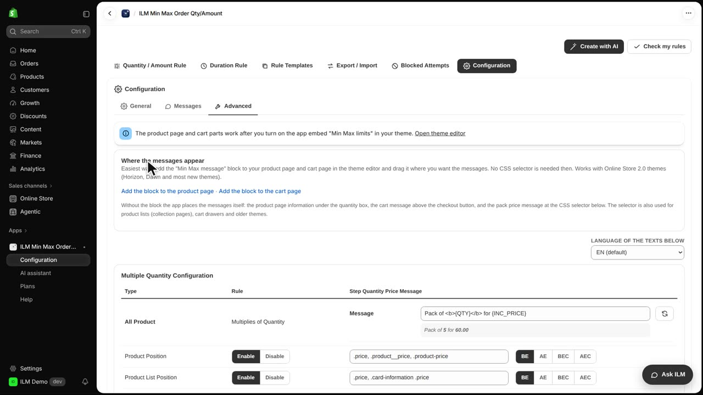
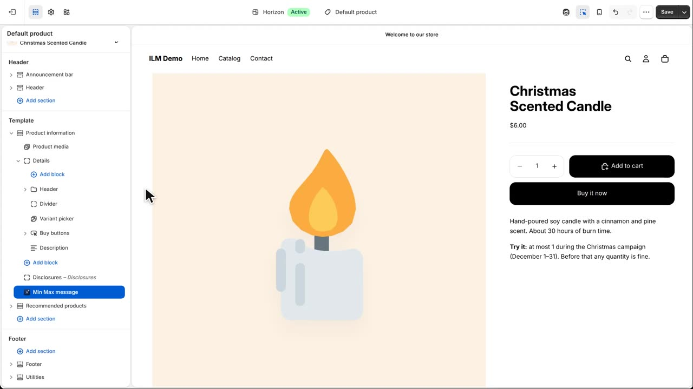
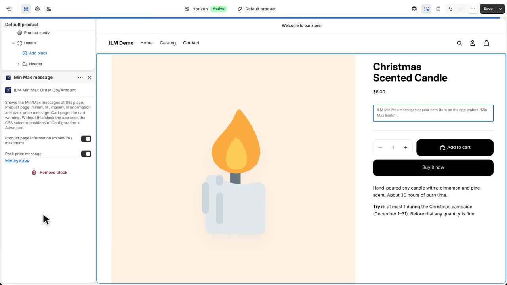
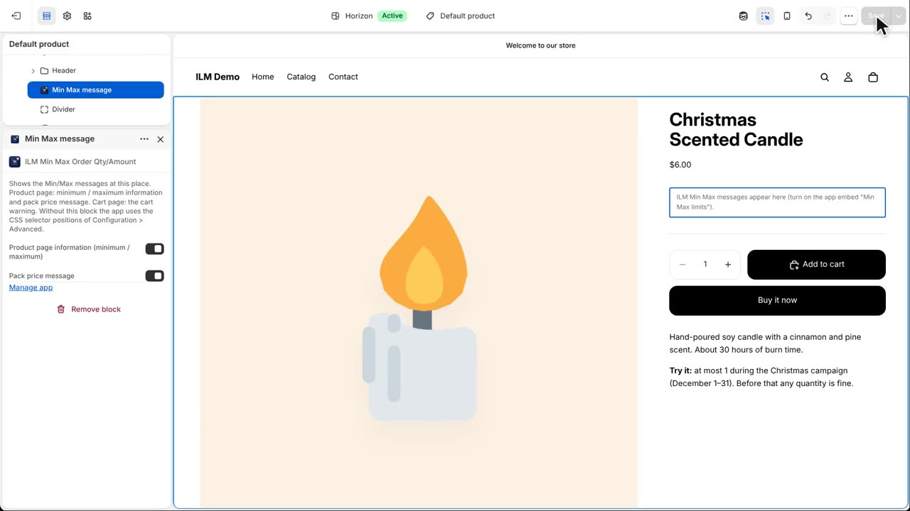
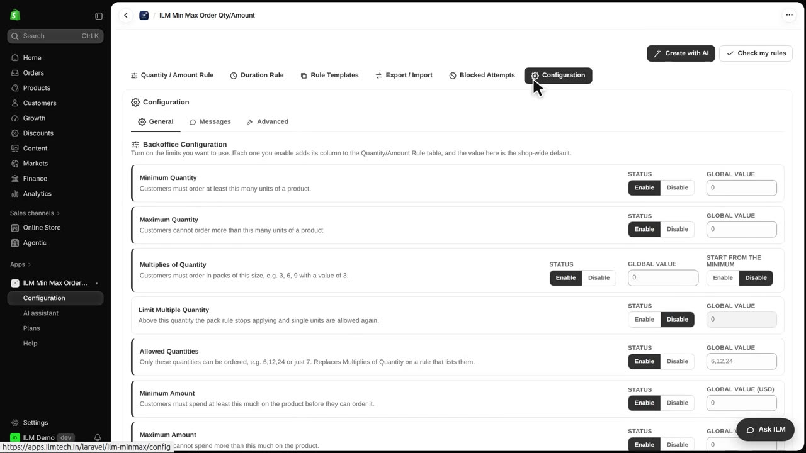
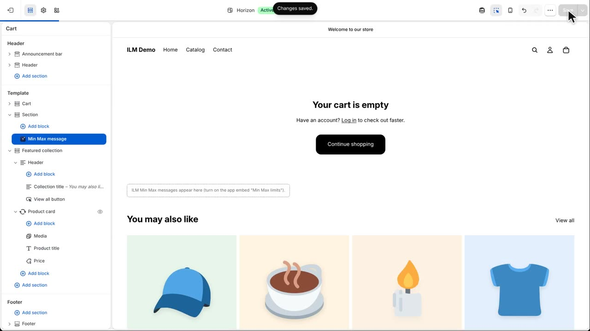
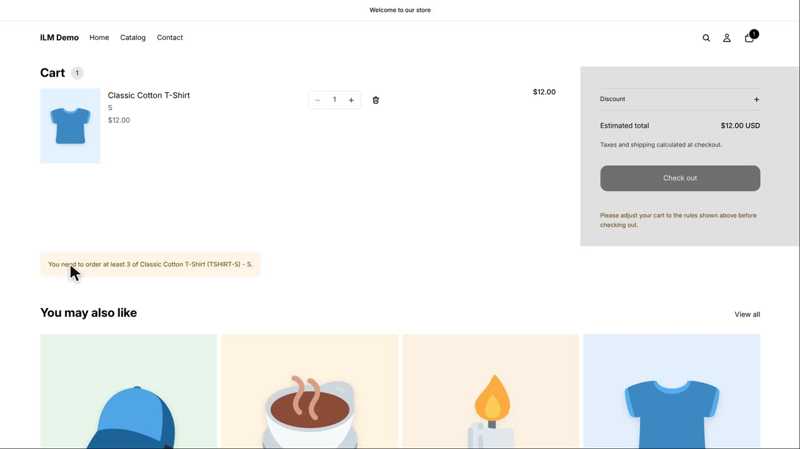

By default the app places its messages itself: the minimum and maximum under the quantity box, and the cart warning above the checkout button. With the Min Max message block you decide the place yourself, without any code. It works with Online Store 2.0 themes like Horizon and Dawn. Our example: show the T-shirt limits right under its price.
In Configuration, open Advanced. The card Where the messages appear explains the two ways. The easy way is the block. The CSS selector positions further down are only needed for product lists, cart drawers and older themes.

Click Add the block to the product page. Shopify opens the theme editor on the product template and adds the Min Max message block to the product information section.

New blocks are added at the end of the section. Drag the block up, right under the Header block, which holds the product title and the price.

Click Save. The block is now part of your theme. Its settings let you show the minimum and maximum information, the pack price message, or both.

In the store, the product page now shows Minimum order three and the pack price exactly under the price, where we placed the block.

Now the cart page. Back in Advanced, click Add the block to the cart page. On this theme the block comes as its own section at the end of the page, so we drag the section up, right under the cart, and save.

When the cart breaks a rule, the warning now appears in the block on the cart page. A slide-out cart drawer keeps the automatic place above its checkout button.
